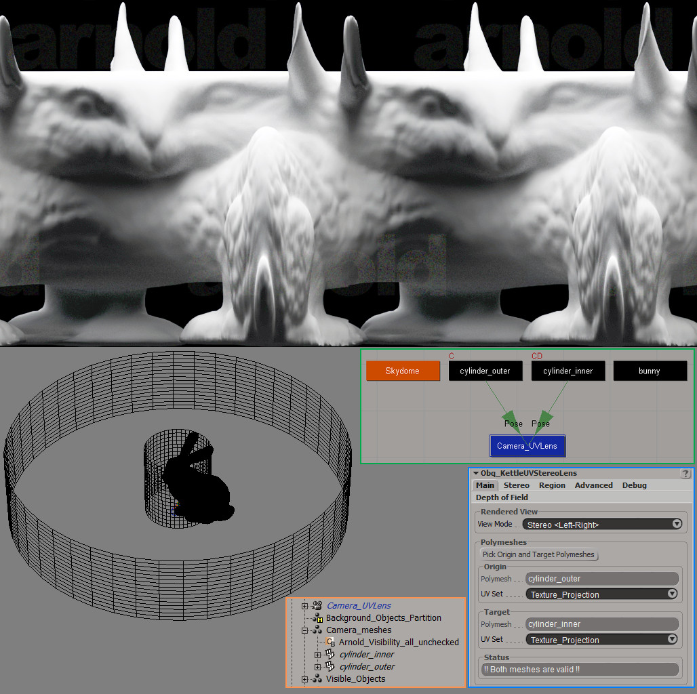
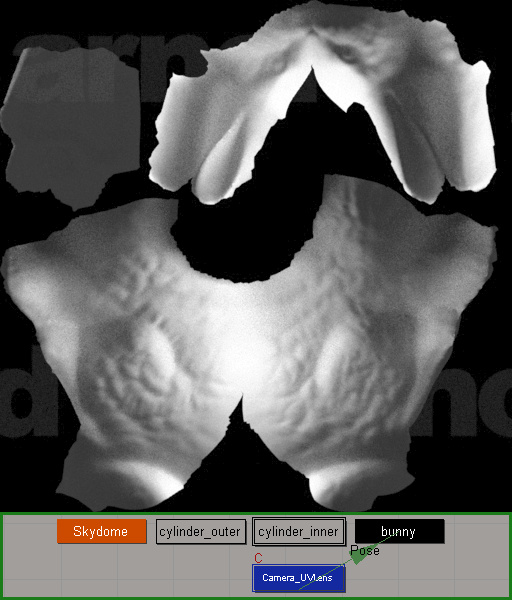

Class
Lens
Synopsis
A camera lens shader using the CKettleBaker class of Jules Stevenson that sends rays from a UV coordinate on a mesh to the same UV coordinate on a different mesh in mono or stereo. It's an enhanced combination of Obq_StereoLens and Kettle_Bake.
Note : This shader can also be used for baking (render mapping) textures using multiple UV sets.

Fig.1 : Not, it's not a mutilated animal, it's a Stanford bunny rendered with an inward cylindrical stereo camera centered but not collapsed on its face.
Usage
Follow these steps for full stereo features :
- Create the origin mesh with UVs and freeze modeling/transforms.
- Add an Arnold visibility property on the origin mesh and uncheck everything.
- Duplicate origin mesh, rename properly, change scale/shape and freeze modeling/transforms.
- Create origin camera of aspect ratio = 1, near clipping plane = 0.001, with an Arnold camera option property set to custom and put Obq_KettleUVStereoLens on it.
- Pose constraint the origin mesh on the origin camera.
- Pose constraint the target mesh on origin camera or on a different camera if both meshes move separately.
- Alternatively, you can pose constraint cameras on meshes instead.
- Open the Obq_KettleUVStereoLens UI on the origin camera, click on "Pick Origin and Target Polymeshes" button and do so.
- Select desired view mode and stereo parameters (including desired final target resolution of a mono frame).
- Select origin camera as pass render camera.
- Once rendered, copy paste the Nuke Crop info into Nuke to split the image into left-right images.
For baking/render mapping, simply use the object mesh as origin mesh in Bake view mode and no Arnold visibility property. Make sure the Epsilon parameter in the Advanced tab is bigger than near clipping plane of origin camera.

Fig.2 : Bake mode example, the camera is constrained to the origin mesh, which is the bunny.
Rendered View

Fig.3 : Converged on target mesh stereo view mode.
View Mode [view_mode]
The view mode used :
| • | Center | : | Mono view centered on UV of origin mesh and in direction of same UV of target mesh. | |
| • | Left | : | Left mono view of stereo pair. | |
| • | Right | : | Right mono view of stereo pair. | |
| • | Stereo <Left-Right> | : | Side-by-side stereo view. | |
| • | Stereo <Down-Up> | : | Stacked stereo view. | |
| • | Bake | : | View mode used for baking/render mapping textures, centered on UV of origin mesh but offset of an epsilon in the normal direction and looking in the inverted normal direction. | |
| • | Normal | : | Like the Bake mode, but looking in the normal direction. |
Polymeshes
Origin Polymesh [origin_polymesh]
The polymesh used for camera ray origin.
Warning : The origin mesh must be constrained to a camera or a camera must be constrained to it.
Origin UV Set [uv_set_origin]
The UV set used on origin polymesh.
Target Polymesh [target_polymesh]
The polymesh used for camera ray direction.
Note : You don't have to supply a target mesh in Bake nor in Normal view mode.
Warning : The target mesh must be constrained to a camera or a camera must be constrained to it.
Target UV Set [uv_set_target]
The UV set used on target polymesh.
Status [polymeshes_status]
Information on validity of meshes.
Stereo Settings
Stereo Type [stereo_type]
| • | Parallel | : | Both left and right eye rays will be parallel to the line between the UV coordinate on the origin mesh and the same UV coordinate on the target mesh. | |
| • | Converged | : | Left and right rays will converge at a point define by the zero parallax mode. |
Interaxial Separation [interaxial_separation]
The distance in 3D units between the left and the right ray origin.
Zero Parallax Mode [zero_parallax_mode]
Where the converging rays will intersect each other.
| • | Use Target Mesh | : | Left and right eye rays will converged on the UV coordinate on the target mesh. | |
| • | Distance | : | Left and right eye rays will converge at a distance given by the zero parallax distance from the UV coordinate on the origin mesh. |
Zero Parallax Distance / Focus Distance [zero_parallax_distance]
The distance in 3D units where the left and right eye rays converge.
Note : This is also used for the focus distance when using depth of field.
Automatic Overscan
Automatic overscan counters the blended lines of pixels by rendering just a few pixels wider.
Filter Size [filter_size]
The width of the filter in the render options > Sampling > Pixel Filtering > Width.
Note : Because of filtering, the lines of pixels immediately next to the left-right border are blended, the floor(filter_width/2) lines in fact. To correct this, an automatic overscan mode was created. Make sure the render width and height are correct. Copy-paste the left/right crop text in Nuke to create the adequate crop nodes.
Target Resolution
Width [target_resolution_x]
The final width in pixels you want each left/right frame to have.
Height [target_resolution_y]
The final height in pixels you want each left/right frame to have.
Render Resolution
Width [render_resolution_x]
The width in pixels needed to give the target width once cropped because of blended pixels.
Height [render_resolution_y]
The height in pixels needed to give the target height once cropped because of blended pixels.
Automatic update of pass output resolution [update_pass_resolution]
Checking this will enable the update of the resolution automatically in the pass options.
Nuke Info
Copy-paste the text to create the proper crop nodes in Nuke.
Render Region
Render Region Only [use_render_region]
Allow the render of only a region of UVs.
Render Region Only [crop_to_region]
If on, the size of the rendered image will be cropped around this region. If off, pixels will be black outside region.
Lower Bound UV [regionU0, regionV0]
The bottom-left corner of the UV region to render.
Higher Bound UV [regionU1, regionV1]
The top-right corner of the UV region to render.
Acceleration
Grid Size [grid_size]
The acceleration grid's resolution used to store UV-vertex information.
Other
Epsilon [interaxial_epsilon]
The epsilon used for calculating left/right directions and the surface offset in Bake view mode.
Depth of Field
Enable [use_dof]
Enable the depth of field.
Note : If you enable this here, you don't need to enable it in the Render Options.
Note : The result is not exactly the same as Arnold's default DoF, but it's very similar.
Size [aperture_size_]
This size controls the amount of blur (size of the iris).
Aspect Ratio [aperture_aspect_ratio_]
The aspect ratio of the lens. Values smaller than 1 will give an horizontal elongated oval vand values greater than 1 will give a vertical elongated oval.
Polygonal Aperture [use_polygonal_aperture]
The shape of the iris is polygonal instead of circular.
Blades [aperture_blades_]
The number of blades the iris has. For example, using 5 blades will give a pentagon shaped iris.
Blade Curvature [aperture_blade_curvature_]
A value representing how sharp is the shape of the iris. A value of 1 will give a perfect circle. A value of 0 will give a sharp shape. Values smaller than 0, will tend to give a star shape iris.

Fig.4 : Blade curvature of 1, 0, -1, -2 and -3.
Rotation [aperture_rotation_]
The rotation in degrees of the shape of the iris.
Bokeh Quality
The bokeh "quality" look can be altered using a bias and gain parameters. This effectively changes the distribution of the rays.
Note : These parameters will eventually be replaced by better sampling functions and image based bokeh.
Invert [bokeh_invert]
Invert the output of the bias/gain operation.
Bias [bokeh_bias]
Bias control of the bokeh.
Gain [bokeh_gain]
Gain control of the bokeh.
| • | Poor bokeh | : | (invert, bias, gain) values around (false, 0.7, 0.2 ). | |
| • | Neutral bokeh | : | (invert, bias, gain) = (false, 0.5, 0.5 ). | |
| • | Good bokeh | : | (invert, bias, gain) values around (true, 0.33, 0.685 ). |

Fig.5 : Poor, Neutral and Good bokeh.